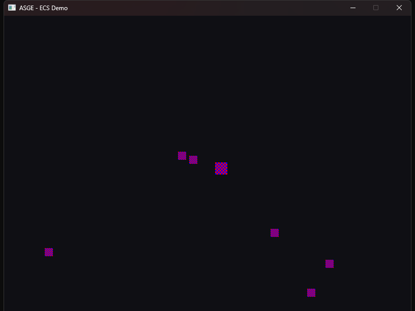

← All examples
ECS · Rendering
ECS
Entities, components and systems in motion
A player entity and a handful of sprite entities, all built through the ECS Registry rather than hand-written classes.
Sprite/texture attachment is deferred to the first Render() call, since a live IRenderer doesn't exist yet when IGame is constructed — a pattern every sprite-driven example after this one follows.
Controls
- W A S D Move the player entity

Run it yourself
build just this example
cmake --build --preset windows-debug --target ecs_demo
# binary lands under bin/ (e.g. bin/Debug/ecs_demo.exe on Windows)See Installation for the full build setup.
Source
examples/ecs_demo/Game.hpp
#pragma once
#include <ASGE/ASGE.hpp>
#include <vector>
class EcsDemoState final : public asge::game::state::IGameState<int>
{
asge::ecs::Registry& m_Registry;
asge::game::asset::AssetManager& m_Assets;
std::vector<asge::ecs::Entity> m_SpriteEntities; // every entity that gets a Sprite once loaded
asge::ecs::Entity m_Player{ asge::ecs::Entity::Null() };
std::unique_ptr<asge::video::ITexture> m_Texture; // Lazily created on first Render
bool m_SpritesAttached{ false };
bool m_Up{ false };
bool m_Down{ false };
bool m_Left{ false };
bool m_Right{ false };
void SpawnEntities();
void EnsureSpritesAttached(asge::video::IRenderer& inRenderer);
void WrapAroundScreen();
void UpdatePlayerVelocity();
public:
EcsDemoState(asge::ecs::Registry& inRegistry, asge::game::asset::AssetManager& inAssets);
[[nodiscard]] std::optional<asge::game::state::Transition<int>>
Update(float inDeltaTime, asge::input::InputState const& inInput) override;
void Render(asge::video::IRenderer& inRenderer) override;
[[nodiscard]] asge::graphics::RGBA_Color ClearColor() const noexcept override { return { 15, 15, 20, 255 }; }
void OnSystemEvent(asge::event::SystemEvent const& inSysEvent) override;
};
class EcsDemoGame final : public asge::game::Game<int>
{
public:
explicit EcsDemoGame(asge::video::IRenderer& inRenderer, asge::audio::AudioDevice& inAudioDev);
protected:
[[nodiscard]] std::unique_ptr<StateType> CreateState(int inId) override;
};
examples/ecs_demo/Game.cpp
#include "Game.hpp"
#include <algorithm>
namespace
{
using asge::game::components::Sprite;
using asge::game::components::Transform;
using asge::game::components::Velocity;
constexpr float kWindowWidth = 800.0f;
constexpr float kWindowHeight = 600.0f;
constexpr float kPlayerSpeed = 220.0f;
// A handful of hardcoded (position, velocity) pairs — enough to show
// several entities moving independently through the same MovementSystem,
// without pulling in <random> for a demo.
struct Drifter { float x, y, dx, dy; };
constexpr Drifter kDrifters[] = {
{ 100.0f, 100.0f, 60.0f, 40.0f },
{ 300.0f, 150.0f, -50.0f, 70.0f },
{ 500.0f, 80.0f, 30.0f, -60.0f },
{ 650.0f, 400.0f, -70.0f, -30.0f },
{ 200.0f, 450.0f, 90.0f, 20.0f },
{ 700.0f, 200.0f, -40.0f, 50.0f },
};
}
EcsDemoState::EcsDemoState(asge::ecs::Registry& inRegistry, asge::game::asset::AssetManager& inAssets)
: m_Registry(inRegistry), m_Assets(inAssets)
{
SpawnEntities();
}
void EcsDemoState::SpawnEntities()
{
for ( auto const& d : kDrifters )
{
auto entity = m_Registry.CreateEntity();
if ( !entity ) { entity.LogError(); continue; }
m_Registry.AddComponent<Transform>( entity.Value(), Transform{
.m_LocalCoordinates = {d.x, d.y}, .m_LocalScale = {0.5f, 0.5f},
.m_WorldCoordinates = {d.x, d.y}, .m_WorldScale = {0.5f, 0.5f}
} );
m_Registry.AddComponent<Velocity>( entity.Value(), Velocity{ d.dx, d.dy } );
m_SpriteEntities.push_back( entity.Value() );
}
// The player: same components as a drifter, just controlled by
// keyboard input (see OnSystemEvent/UpdatePlayerVelocity) instead of
// a fixed velocity.
auto player = m_Registry.CreateEntity();
if ( !player ) { player.LogError(); return; }
m_Player = player.Value();
m_Registry.AddComponent<Transform>( m_Player, Transform{
.m_LocalCoordinates = {400.0f, 300.0f}, .m_LocalScale = {0.75f, 0.75f},
.m_WorldCoordinates = {400.0f, 300.0f}, .m_WorldScale = {0.75f, 0.75f}
} );
m_Registry.AddComponent<Velocity>( m_Player, Velocity{} );
m_SpriteEntities.push_back( m_Player );
}
void EcsDemoState::EnsureSpritesAttached(asge::video::IRenderer &inRenderer)
{
if ( m_SpritesAttached ) return;
// A virtual path resolved through the AssetManager's VFS, not a
// hardcoded OS path. Kept on the Sprite too (m_VirtualPath) so it
// round-trips through Serializer<Sprite> -- the texture pointer itself
// doesn't serialize.
constexpr char const* kCheckerPath = "textures/checker.bmp";
auto imageAsset = m_Assets.GetImage(kCheckerPath);
if ( !imageAsset )
{
imageAsset.LogError();
return;
}
m_Texture = inRenderer.CreateTexture(imageAsset.Value()->Get());
if ( !m_Texture ) return;
// Components can only be attached once a texture exists, so this
// step is deferred to the first Render() call rather than done in
// the constructor (same reasoning as texture_demo's own lazy load).
for ( auto entity : m_SpriteEntities )
{
auto result = m_Registry.AddComponent<Sprite>(
entity, Sprite{ m_Texture.get(), std::nullopt, kCheckerPath } );
if ( !result ) result.LogError();
}
m_SpritesAttached = true;
}
void EcsDemoState::WrapAroundScreen()
{
// Demo-specific dressing (not part of the shared Game/Systems library):
// keeps drifting entities on screen by teleporting them across once
// they fully exit one edge.
for ( auto [ entity, transform ] : m_Registry.View<Transform>() )
{
(void)entity;
auto& t = transform.get();
float const margin = 64.0f * std::max(t.m_LocalScale.x(), t.m_LocalScale.y()); // rough sprite half-size
if ( t.m_LocalCoordinates.x() < -margin ) { t.m_LocalCoordinates.x() = kWindowWidth + margin; t.m_Dirty = true; }
else if ( t.m_LocalCoordinates.x() > kWindowWidth + margin ) { t.m_LocalCoordinates.x() = -margin; t.m_Dirty = true; }
if ( t.m_LocalCoordinates.y() < -margin ) { t.m_LocalCoordinates.y() = kWindowHeight + margin; t.m_Dirty = true; }
else if ( t.m_LocalCoordinates.y() > kWindowHeight + margin ) { t.m_LocalCoordinates.y() = -margin; t.m_Dirty = true; }
}
}
void EcsDemoState::UpdatePlayerVelocity()
{
auto result = m_Registry.GetComponent<Velocity>( m_Player );
if ( !result ) return;
Velocity& velocity = result.Value().get();
velocity.m_DX = (m_Right ? kPlayerSpeed : 0.0f) - (m_Left ? kPlayerSpeed : 0.0f);
velocity.m_DY = (m_Down ? kPlayerSpeed : 0.0f) - (m_Up ? kPlayerSpeed : 0.0f);
}
std::optional<asge::game::state::Transition<int>>
EcsDemoState::Update([[maybe_unused]] float inDeltaTime, [[maybe_unused]] asge::input::InputState const& inInput)
{
UpdatePlayerVelocity();
WrapAroundScreen();
return std::nullopt;
}
void EcsDemoState::Render(asge::video::IRenderer &inRenderer)
{
EnsureSpritesAttached(inRenderer);
}
void EcsDemoState::OnSystemEvent(asge::event::SystemEvent const &inSysEvent)
{
auto const* keyEvent = inSysEvent.TryGet<asge::event::KeyboardEvent>();
if ( !keyEvent ) return;
bool const pressed = keyEvent->s_Type == asge::event::EventType::KEYBOARD_KEY_PRESSED;
switch ( keyEvent->s_Keycode )
{
case asge::input::Keycode::W: m_Up = pressed; break;
case asge::input::Keycode::S: m_Down = pressed; break;
case asge::input::Keycode::A: m_Left = pressed; break;
case asge::input::Keycode::D: m_Right = pressed; break;
default: break;
}
}
EcsDemoGame::EcsDemoGame(asge::video::IRenderer& inRenderer, asge::audio::AudioDevice& inAudioDev)
: Game(inRenderer, inAudioDev)
{
// ASGE_ECS_DEMO_ASSET_DIR is injected by CMakeLists.txt; mounted once so
// sprites are loaded by virtual path (see EnsureSpritesAttached) instead
// of a hardcoded OS path baked into this demo.
auto mountResult = m_Vfs.Mount("textures", ASGE_ECS_DEMO_ASSET_DIR);
if ( !mountResult ) mountResult.LogError();
SetInitialState(0);
}
std::unique_ptr<EcsDemoGame::StateType> EcsDemoGame::CreateState([[maybe_unused]] int inId)
{
return std::make_unique<EcsDemoState>( m_SceneManager.GetRegistry(), m_Assets );
}